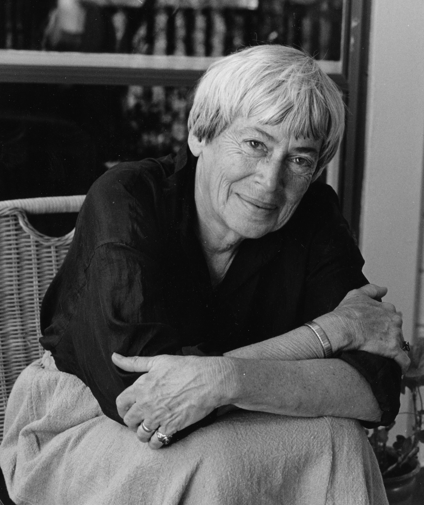
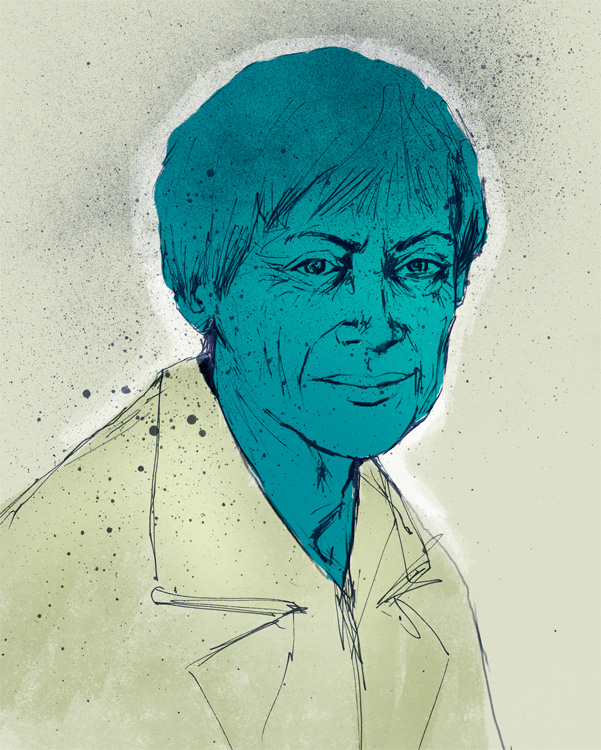

Ursula Kroeber Le Guin (21 Ekim 1929 - 22 Ocak 2018), aralarında kendi yarattığı Hain ve Yerdeniz kurgusal evrenlerinde geçen bilimkurgu ve fantezi eserlerinin de bulunduğu spekülatif kurgu çalışmaları ile tanınmış Amerikalı yazardır. İlk eseri 1959 yılında yayımlanan Le Guin'in edebiyat kariyeri neredeyse altmış yıl sürmüş ve bu süre zarfında yirmi roman ve yüzden fazla kısa öykünün yanı sıra çeviri, eleştiri, şiir, tiyatro, çocuk ve genç edebiyatı ürünleri de ortaya koymuştur. Genellikle bir bilimkurgu ve fantezi yazarı olarak tanımlanan Le Guin aynı zamanda "Amerikan Edebiyatının önemli bir sesi" olarak anılmıştır.[8] Kendisi ise daha çok bir "Amerikan romancısı" olarak bilinmeyi tercih ettiğini söylemiştir. Le Guin, Kaliforniya'nın Berkeley şehrinde, yazar Theodora Kroeber ve antropolog Alfred Louis Kroeber'in çocuğu olarak dünyaya gelmiştir. Fransızca üzerine master derecesini tamamladıktan sonra doktora çalışmalarına başlamış ancak 1953 yılında tarihçi Charles Le Guin ile evlendikten sonra bu çalışmaları bırakmıştır. Tam zamanlı olarak yazmaya 1950'lerin sonunda başlamış; Harold Bloom tarafından şaheserleri olarak tanımlanan Yerdeniz Büyücüsü (1968) ve Karanlığın Sol Eli (1969) romanlarıyla önemli eleştirel ve ticari başarı kazanmıştır.Karanlığın Sol Eli adlı eseriyle en iyi roman kategorisinde hem Hugo hem de Nebula Ödülü kazanarak, bunu başaran ilk kadın olmuştur. Bunları, Yerdeniz ve Hain Evrenlerinde geçen çeşitli eserleri takip etmiştir.
Kültürel antropoloji, Taoizm,feminizm ve Carl Jung'un yazılarının etkileri eserlerinde güçlü bir şekilde görülmektedir. Öykülerinde çok sayıda antropolog ya da kültürel gözlemci kahramanlar yer almış ve birçok yazısında denge ve denklik üzerine Taoist düşünceler tespit edilmiştir. Le Guin tipik spekülatif kurgu metaforlarını, Yerdeniz'de olduğu gibi koyu derili kahramanlar yaratarak defalarca yıkmıştır ve yine 1985 yılında yayımlanmış deneysel eseri Hep Yuvaya Dönmek gibi kitaplarda sıradışı biçemsel ve yapısal araçlar kullanmıştır. Yazılarında cinsiyet, cinsellik ve reşit olma gibi sosyal ve siyasi konular öne çıkar. Omelas'ı Bırakıp Gidenler (1973) adlı alegorisinde ve Mülksüzler (1974) ütopik romanında yaptığı gibi alternatif siyasi yapıları çok sayıda öyküsünde açımlamıştır. Le Guin'in yazıları spekülatif kurgu alanında ses getirmiş ve eleştirmenlerin yoğun ilgisine konu olmuştur. Aralarında 8 Hugo, 6 Nebula ve 24 Locus Ödülü olmak üzere sayısız ödül almış ve 2003 yılında Amerika Bilimkurgu ve Fantezi Yazarları Derneği (SFWA) tarafından "Grand Master" (Büyük Usta) olmaya layık görülen ikinci kadın olmuştur. ABD Kongre Kütüphanesi 2000 yılında ona "Living Legend" (Yaşayan Efsane) unvanını vermiştir. Le Guin aralarında Man Booker Ödülü sahibi Salman Rüşdi, David Mitchell, Neil Gaiman ve Iain Banks'ın da bulunduğu birçok yazarı etkilemiştir. 2018 yılında ölümünden sonra eleştirmen John Clute Le Guin'in "Amerika bilimkurgusuna yaklaşık yarım yüzyıldır başkanlık ettiği"ni yazmıştır.[11] Yazar Michael Chabon ise ondan "neslinin en büyük Amerikan yazarı" olarak bahsetmiştir.[12][13] Yazar anısına "The Ursula K. Le Guin Prize for Fiction" adını taşıyan bir edebiyat ödülü düzenlenmektedir.[14]
